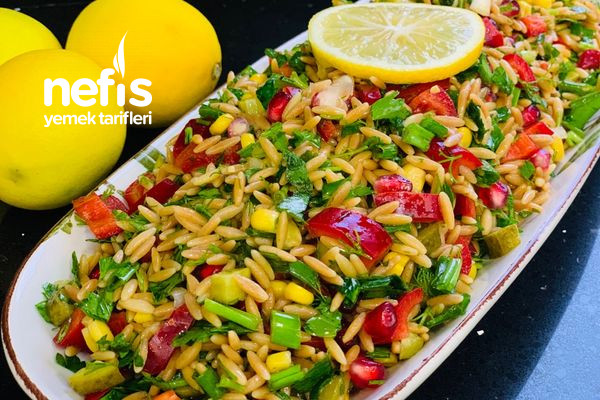

...Şehriye Salatası Tarifi...
Kaşık kaşık yediren şehriye salatası tarifini paylaşıyoruz.
Malzemeler:
- 1 büyük su bardağı arpa şehriye
- 2 su bardağı su (aynı su bardağı ile)
- Tuz
- Sıvıyağ
- 1 adet kapya biber
- 1 kase mısır
- 4-5 adet kornişon turşu
- 4-5 adet yeşil
- Yarım demet maydanoz
- Bir tutam dereotu
- Nar
- 1 adet limon
- Sevdiğiniz baharatlar(pul,biber,tuz)

Not: Pratik hazırlanabilmesinin yanında 10-12 kişilik bir salata olması da kalabalık misafirlik anlarında size yardımcı olur.
Yapılışı:
- Tenceremize yaklaşık yarım çay bardağı kadar sıvıyağ koyalım.
- Üzerine şehriyeleri ekleyip rengi kahverengi olana kadar kavuralım.
- 2 su bardağı sıcak suyumuzu ve tuzunu ekleyip pişirmeye bırakalım.
- Suyunu çekince pilav gibi demlenmeye bırakalım ve soğutalım.
- Bu arada tüm malzemeleri doğrayalım (tüm yeşillikler,turşu ve kapya biber)
- Malzemeleri bir kapta birleştirelim.
- Limon ve baharatlarını ekleyip karıştıralım.
- Servis tabağımızı alalım.
Afiyet Olsun